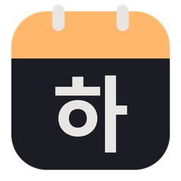

하루하루(Haru)는 Windows 바탕화면에 구글 캘린더를 달력처럼 띄워 두는 무료 PC 프로그램이에요. 날짜를 더블클릭하면 그 자리에서 바로 일정을 적을 수 있고, 휴대폰의 구글 캘린더와 자동으로 맞춰져요.
⬇ Windows용 내려받기창을 따로 열 필요 없이, 바탕화면이 그대로 달력이 돼요.
날짜 칸을 더블클릭하면 그 자리에 작은 창이 열려요. 한 줄에 일정 하나, 13:30 회의처럼 시간을 붙이면 시간 일정이 돼요.
하루에서 적은 일정은 휴대폰 구글 캘린더에, 휴대폰에서 적은 일정은 하루에 그대로 나타나요. 인터넷이 끊겨도 적어 두면 나중에 올라가요.
대한민국 공휴일과 기념일, 칸을 넘어가는 여러 날 일정, 구글 할 일까지 한 화면에서 보고 바로 완료 체크해요.
테마, 색, 투명도, 글꼴, 글자 크기, 주 시작 요일까지 바꿀 수 있어요. 바꾸는 즉시 미리 보여요.
위치와 크기를 자유롭게 바꾸고, 화면 가장자리와 작업표시줄에 자석처럼 붙어요. 다 정하면 잠가 두면 돼요.
안 쓸 때는 시계 옆 아이콘으로 숨겨 두고, Ctrl+Alt+H 같은 단축키로 불러와요. 단축키는 바꿀 수 있어요.
하루는 따로 서버가 없어요. 내 PC와 Google 사이에서만 데이터가 오가고, 개발자를 포함한 누구에게도 보내지지 않아요.
| 요청하는 권한 | 쓰는 곳 |
|---|---|
캘린더 일정 보기·편집auth/calendar.events | 체크해 둔 캘린더의 일정을 달력에 보여 주고, 하루에서 적거나 고치거나 지운 일정을 구글 캘린더에 반영해요. |
캘린더 목록 보기·체크 변경auth/calendar.calendarlist | 구글 캘린더 왼쪽의 캘린더 목록(이름·색·체크 상태)을 하루에서도 보여 주고, 하루에서 체크를 바꾸면 구글 캘린더에도 똑같이 반영해요. |
할 일 보기·완료 표시auth/tasks | 마감일이 있는 구글 할 일(Tasks)을 달력에 보여 주고, 하루에서 체크하면 완료로 표시해요. |
공개 캘린더 일정 보기auth/calendar.events.public.readonly | Google이 공개한 대한민국 공휴일 캘린더를 읽어서 공휴일·기념일을 표시해요. |
기본 프로필 (이름, 이메일, 사진)openid · email · profile | 지금 어떤 계정으로 로그인했는지 계정 메뉴에 보여 줘요. |
자세한 내용은 개인정보처리방침에 있어요.